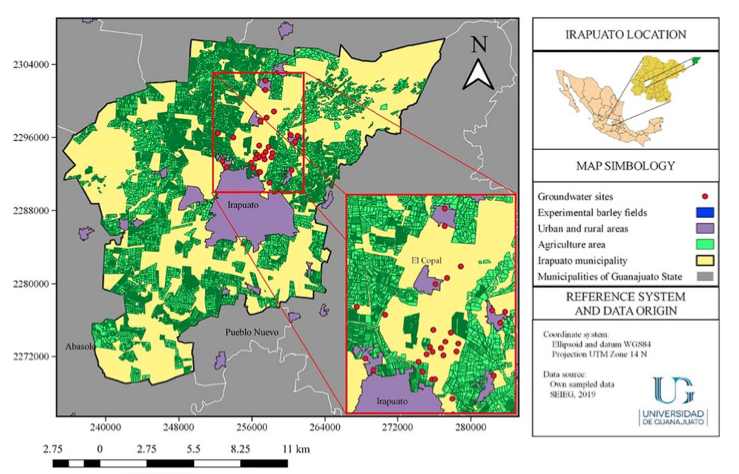
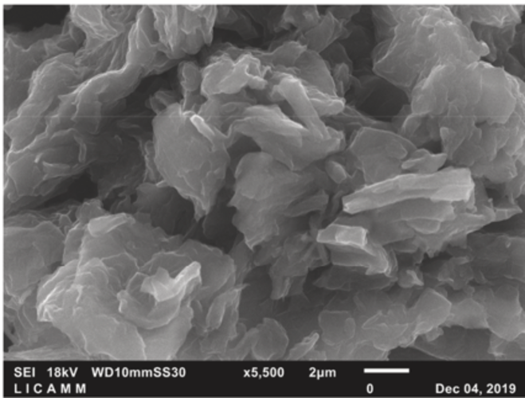
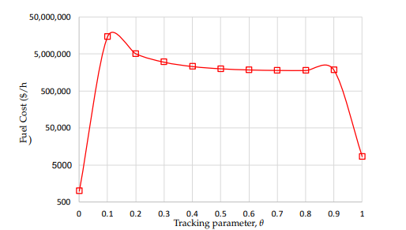

Inicio
Miembros
Colaboradores
Contacto
Menú
Nuestros artículos más recientes

SPATIO-TEMPORAL GROUNDWATER ARSENIC DISTRIBUTION IN CENTRAL MEXICO: IMPLICATIONS IN ACCUMULATION OF ARSENIC IN BARLEY (HORDEUM VULGARE L.) AGROSYSTEM

EFFECTIVE REMOVAL OF ARSENIC FROM AN AQUEOUS SOLUTION BY FERRIHYDRITE/ GOETHITE GRAPHENE OXIDE COMPOSITES USING THE MODIFIED HUMMERS METHOD

SOLUTION TO THE ECONOMIC EMISSION DISPATCH PROBLEM USING NUMERICAL POLYNOMIAL HOMOTOPY CONTINUATION